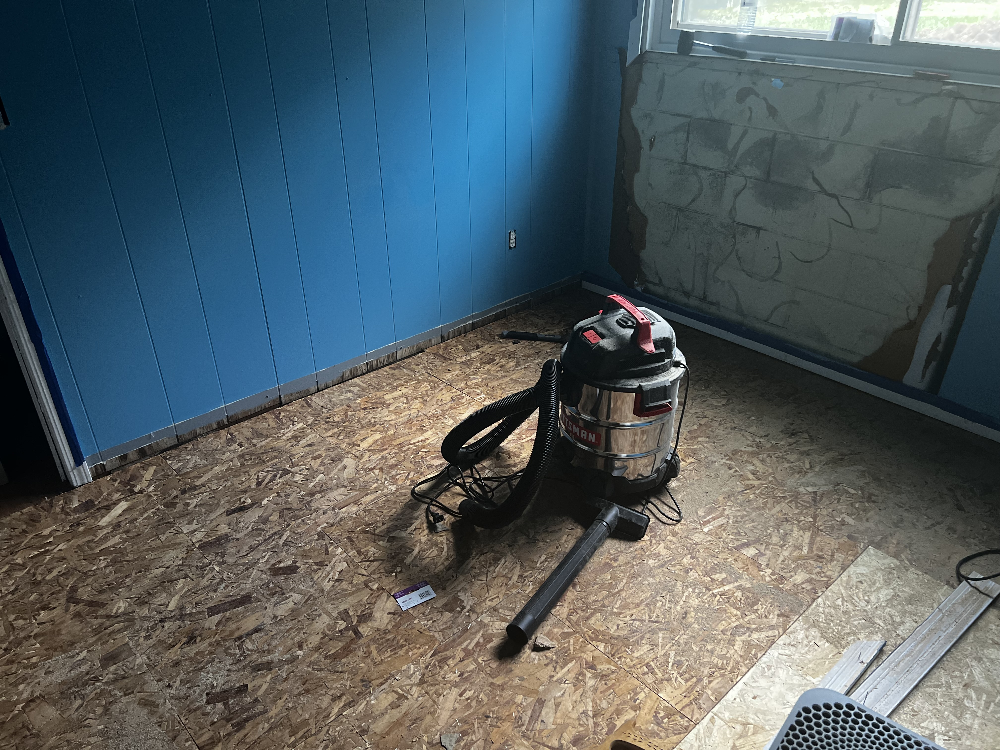

I recently bought a new house. The rise of rent this year made it no longer sensible to rent. But with a puchase like this you take a lot more risk. We were unlucky with our purchase. The house was in good condition but the previous owner concealed a crack in the foundation causing a leak in the finished basement. It wasn't noticeable for even the inspector as the only way to tell was to lay on the carpet and feel that it was wet. So this weekend I tore up the carpet, the wall, and the subfloor. I then cleaned the foundation and put in a new waterproof subfloor. This took roughly about 14 hours worth of work. The question is what could we have done to learn of this before buying the house or was it just unavoidable.